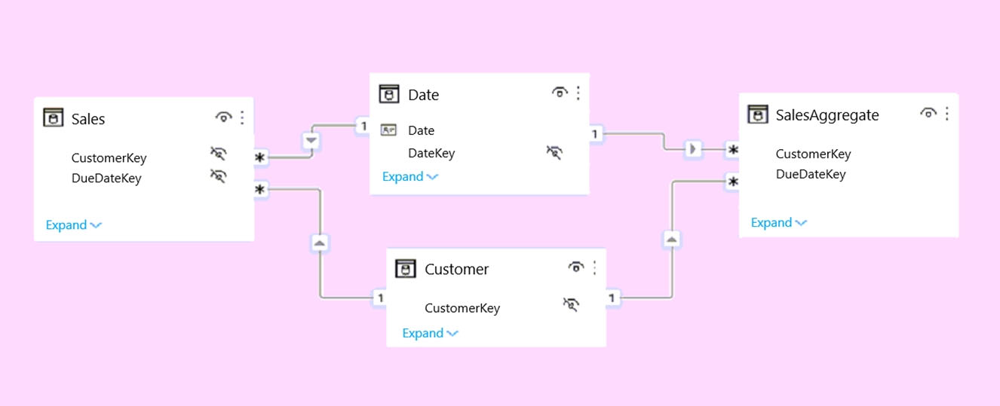
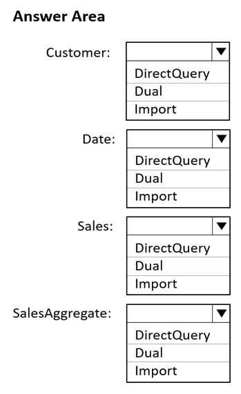
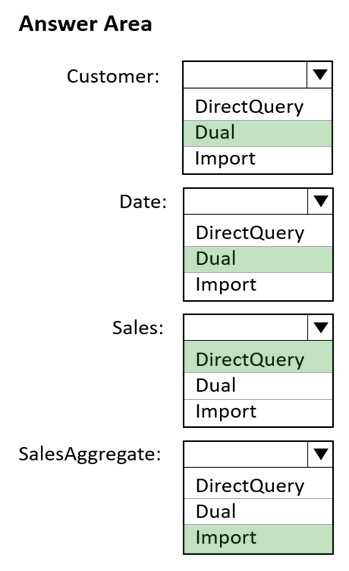

Topic 1 Question 1
HOTSPOT -
You plan to create the Power BI model shown in the exhibit. (Click the Exhibit tab.)

The data has the following refresh requirements:
✑ Customer must be refreshed daily.
✑ Date must be refreshed once every three years.
✑ Sales must be refreshed in near real time.
✑ SalesAggregate must be refreshed once per week.
You need to select the storage modes for the tables. The solution must meet the following requirements:
✑ Minimize the load times of visuals.
✑ Ensure that the data is loaded to the model based on the refresh requirements.
Which storage mode should you select for each table? To answer, select the appropriate options in the answer area.
NOTE: Each correct selection is worth one point.
Hot Area:

